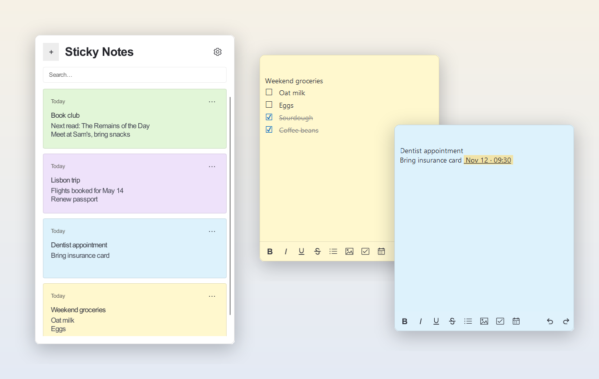
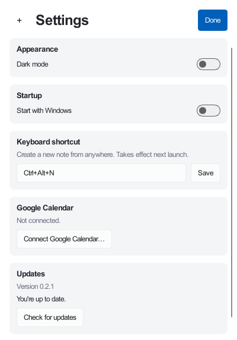

Sticky Notes Plus
Quick sticky notes for Windows, with reminders that reach your phone through Google Calendar.

What it does
Notes on your desktop
Colored notes that stay where you put them, plus a board with search, archive and restore.
Checklists and formatting
Checkboxes, bullet lists, bold, italic, underline, strikethrough and images.
Reminders
Add a date, an optional time and a repeat. Windows notifies you when it's due, with snooze.
On your phone
Optionally sync timed reminders to a Google Calendar the app creates, so alerts reach you away from your PC.
Fits in
Dark mode, a global new-note shortcut and Start with Windows.
Yours to keep
Notes stay on your PC. Export them all to a file and import them back at any time.
Google Calendar sync
Sync is off until you choose Connect Google Calendar in Settings. The app then asks Google only for permission to manage calendars it creates itself, and adds a calendar named "Sticky Notes". It cannot see or change your other calendars or events. Disconnect at any time from Settings.
Your notes stay on your PC. See the privacy policy for exactly what is sent to Google.
Updates
Open Settings → Updates to check for a new version and install it in one click. The app never interrupts you with pop-ups.

Installing
- Download
StickyNotesPlus.msiand open it. - The installer isn't code-signed, so Windows SmartScreen may warn you. Choose More info, then Run anyway.
- When you connect Google Calendar, Google may say it hasn't verified the app. Choose Advanced, then the link to continue to Sticky Notes Plus. You can review exactly what the app can access on the next screen.
Open source
Sticky Notes Plus is written in Rust and released under the MIT licence. The source, issue tracker and every release are on GitHub.